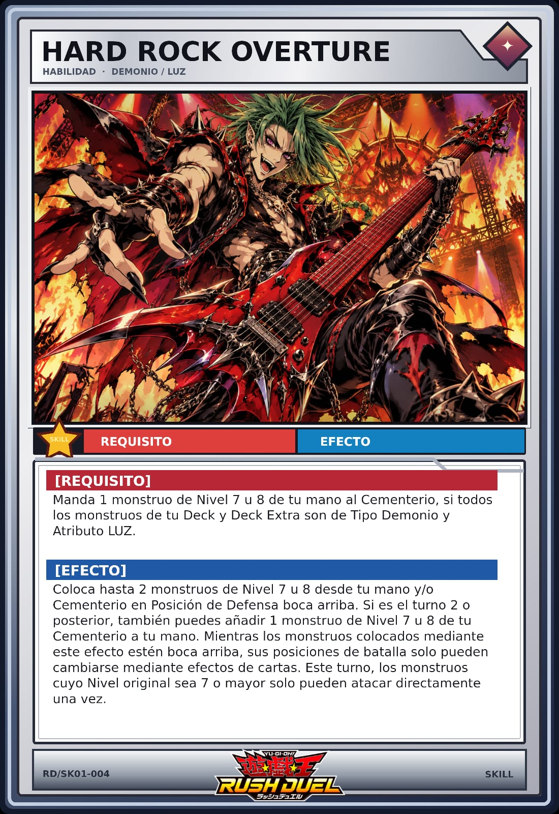

Guía del deck. Las jugadas conservan sus condiciones y límites documentados.
- deck_id: 705
- Nombre registrado: Royal
- Formato: rush_duel
- Main: 30; Extra: 0; Side: 0; Reserva: 0.
- Arquetipo: Royal Rebel de Rush Duel, con habilidad Hard Rock Overture.
- Tipo de estrategia: Sacrificios e Invocación de jefes que presionan el campo rival.
- Estilo de juego: combate y retirada selectiva según el jefe disponible.
- Cómo se juega: los cuerpos de apoyo preparan Sacrificios para monstruos Royal Rebel como Heavy Metal o Progrock. La habilidad y la recuperación de recursos aportan opciones bajo sus condiciones propias.
- Cartas representativas: Heavy Metal, Progrock, Phaser y Hard Rock Overture.
- Qué vigilar: Nivel exigido por efectos de apoyo, materiales sacrificados y monstruos puestos en Defensa. Este inventario no posee Extra Deck.
- Zona y copias: Main 3x. CID Rush: 16344.
- Rol funcional: Monstruo de Efecto — presión de combate / modificación de estadísticas.
- Estado de sinergia y función: Sinergia indirecta (soporte o recursos). Es una clasificación de juego; revisar la relación concreta en A06.
- Papel como recurso, descarte o coste: Coste o consumo descrito en A05: pagar/cumplir el requisito escrito antes de prometer la resolución.
- Requisito específico: Si el rival controla un monstruo, enviar la carta superior del Deck al Cementerio.
- Efecto / resultado concreto: Elegir un Demonio de Nivel 5 o superior boca arriba propio; sus ataques infligen daño de penetración este turno.
- Ir primero, segundo y juego tardío: Primero: preparar acceso y campo necesario sin gastar la respuesta antes de tiempo; segundo: usarla para abrir combate o retirar la amenaza que cumple su condición; tardío: evaluar si quedan objetivos reales.
- Relación con habilidad y otras piezas: HARD ROCK OVERTURE puede colocar Nivel 7/8 en Defensa, pero colocar por Skill no cuenta como Invocación por Sacrificio de los jefes Royal Rebel's.
- Riesgos y dependencias: pagar/cumplir el requisito escrito antes de prometer la resolución.
- Confianza: RESUMEN_FUNCIONAL_DE_GUIA_PREVIA_CON_FUENTE_KONAMI; pendiente cotejo adicional de traducción/ventanas según la liga. Fuente Rush oficial: https://www.db.yugioh-card.com/rushdb/card_search.action?cid=16344&ope=2
- Contraste de fuente Rush: CID 16344: fuente oficial Rush consultada en japonés; tipo Monstruo de Efecto; descripción funcional en español procede de la guía previa y sigue siendo interpretación editorial.
- Aplicación concreta dentro de este deck (A06): Elegir un Demonio de Nivel 5 o superior boca arriba propio; sus ataques infligen daño de penetración este turno.
- Alcance de esta ficha: interpretación táctica editorial. Los costes, objetivos, ventanas y límites exactos se deben cotejar con el texto oficial antes de considerarlos verificados en una secuencia A09.
USO PRÁCTICO Y SINERGIA — Kheiron el Caballero Estelar
- Label funcional: Sinergia indirecta. Clasificación documental; una relación es válida solo si se satisfacen sus condiciones exactas.
- Qué hace: Elegir un Demonio de Nivel 5 o superior boca arriba propio; sus ataques infligen daño de penetración este turno.
- Cómo aprovecharla en este deck: Elegir un Demonio de Nivel 5 o superior boca arriba propio; sus ataques infligen daño de penetración este turno.
- Uso y consumo de recursos: Coste o consumo descrito en A05: pagar/cumplir el requisito escrito antes de prometer la resolución.
- Cuándo tener precaución: pagar/cumplir el requisito escrito antes de prometer la resolución.
- Alcance de la guía: explicación de función y aplicación derivada de la ficha existente. No certifica una nueva secuencia de invocación o cadena.
- Zona y copias: Main 3x. CID Rush: 16330.
- Rol funcional: Monstruo de Efecto — extensor / habilitador de material.
- Estado de sinergia y función: Sinergia directa descrita. Es una clasificación de juego; revisar la relación concreta en A06.
- Papel como recurso, descarte o coste: Coste o consumo descrito en A05: pagar/cumplir el requisito escrito antes de prometer la resolución.
- Requisito específico: Controlar un Demonio de Nivel 7+ boca arriba y enviar este Phaser boca arriba del Campo al Cementerio.
- Efecto / resultado concreto: Invocar de Modo Especial en Defensa boca arriba un Demonio de Nivel 7+ del Cementerio.
- Ir primero, segundo y juego tardío: Primero: construir la condición de activación; segundo: verificar que la jugada responde al estado rival actual; tardío: ahorrar el recurso si todavía no se cumple el requisito.
- Relación con habilidad y otras piezas: HARD ROCK OVERTURE puede colocar Nivel 7/8 en Defensa, pero colocar por Skill no cuenta como Invocación por Sacrificio de los jefes Royal Rebel's.
- Riesgos y dependencias: pagar/cumplir el requisito escrito antes de prometer la resolución.
- Confianza: RESUMEN_FUNCIONAL_DE_GUIA_PREVIA_CON_FUENTE_KONAMI; pendiente cotejo adicional de traducción/ventanas según la liga. Fuente Rush oficial: https://www.db.yugioh-card.com/rushdb/card_search.action?cid=16330&ope=2
- Contraste de fuente Rush: CID 16330: fuente oficial Rush consultada en japonés; tipo Monstruo de Efecto; descripción funcional en español procede de la guía previa y sigue siendo interpretación editorial.
- Aplicación concreta dentro de este deck (A06): Invocar de Modo Especial en Defensa boca arriba un Demonio de Nivel 7+ del Cementerio.
- Alcance de esta ficha: interpretación táctica editorial. Los costes, objetivos, ventanas y límites exactos se deben cotejar con el texto oficial antes de considerarlos verificados en una secuencia A09.
USO PRÁCTICO Y SINERGIA — Phaser del Rebelde Real
- Label funcional: Sinergia directa. Clasificación documental; una relación es válida solo si se satisfacen sus condiciones exactas.
- Qué hace: Invocar de Modo Especial en Defensa boca arriba un Demonio de Nivel 7+ del Cementerio.
- Cómo aprovecharla en este deck: Invocar de Modo Especial en Defensa boca arriba un Demonio de Nivel 7+ del Cementerio.
- Uso y consumo de recursos: Coste o consumo descrito en A05: pagar/cumplir el requisito escrito antes de prometer la resolución.
- Cuándo tener precaución: pagar/cumplir el requisito escrito antes de prometer la resolución.
- Alcance de la guía: explicación de función y aplicación derivada de la ficha existente. No certifica una nueva secuencia de invocación o cadena.
- Zona y copias: Main 3x. CID Rush: 19760.
- Rol funcional: Monstruo de Efecto — presión de combate / modificación de estadísticas.
- Estado de sinergia y función: Sinergia indirecta (soporte o recursos). Es una clasificación de juego; revisar la relación concreta en A06.
- Papel como recurso, descarte o coste: Coste o consumo descrito en A05: comprobar zona, objetivos y ventana; el nombre de la carta no reemplaza su texto.
- Requisito específico: Mostrar al rival otro Demonio de la mano para Invocar esta carta de Modo Especial desde la mano.
- Efecto / resultado concreto: Mientras permanezca boca arriba, aumenta en 300 el ATK de todos tus Demonios boca arriba, incluido él mismo.
- Ir primero, segundo y juego tardío: Primero: preparar acceso y campo necesario sin gastar la respuesta antes de tiempo; segundo: usarla para abrir combate o retirar la amenaza que cumple su condición; tardío: evaluar si quedan objetivos reales.
- Relación con habilidad y otras piezas: La Skill HARD ROCK OVERTURE exige Demonios/LUZ y un Nivel 7/8 en mano para enviar al GY; no se roba.
- Riesgos y dependencias: comprobar zona, objetivos y ventana; el nombre de la carta no reemplaza su texto.
- Confianza: RESUMEN_FUNCIONAL_DE_GUIA_PREVIA_CON_FUENTE_KONAMI; pendiente cotejo adicional de traducción/ventanas según la liga. Fuente Rush oficial: https://www.db.yugioh-card.com/rushdb/card_search.action?cid=19760&ope=2
- Contraste de fuente Rush: CID 19760: fuente oficial Rush consultada en japonés; tipo Monstruo de Efecto; descripción funcional en español procede de la guía previa y sigue siendo interpretación editorial.
- Aplicación concreta dentro de este deck (A06): Mientras permanezca boca arriba, aumenta en 300 el ATK de todos tus Demonios boca arriba, incluido él mismo.
- Alcance de esta ficha: interpretación táctica editorial. Los costes, objetivos, ventanas y límites exactos se deben cotejar con el texto oficial antes de considerarlos verificados en una secuencia A09.
USO PRÁCTICO Y SINERGIA — Impasse Ignoto
- Label funcional: Sinergia indirecta. Clasificación documental; una relación es válida solo si se satisfacen sus condiciones exactas.
- Qué hace: Mientras permanezca boca arriba, aumenta en 300 el ATK de todos tus Demonios boca arriba, incluido él mismo.
- Cómo aprovecharla en este deck: Mientras permanezca boca arriba, aumenta en 300 el ATK de todos tus Demonios boca arriba, incluido él mismo.
- Uso y consumo de recursos: Coste o consumo descrito en A05: comprobar zona, objetivos y ventana; el nombre de la carta no reemplaza su texto.
- Cuándo tener precaución: comprobar zona, objetivos y ventana; el nombre de la carta no reemplaza su texto.
- Alcance de la guía: explicación de función y aplicación derivada de la ficha existente. No certifica una nueva secuencia de invocación o cadena.
- Zona y copias: Main 2x. CID Rush: 16331.
- Rol funcional: Monstruo de Efecto — removal / apertura de campo.
- Estado de sinergia y función: Sinergia indirecta (soporte o recursos). Es una clasificación de juego; revisar la relación concreta en A06.
- Papel como recurso, descarte o coste: Coste o consumo descrito en A05: el resultado está sujeto a monstruos/cartas que puedan ser afectados y a respuestas del rival. la Skill que pone monstruos….
- Requisito específico: Haber Invocado esta carta por Sacrificio durante este turno usando DOS Demonios de Nivel 7+.
- Efecto / resultado concreto: Destruye todos los monstruos boca arriba rivales; después inflige 100 LP por la suma de sus Niveles originales.
- Ir primero, segundo y juego tardío: Primero: preparar acceso y campo necesario sin gastar la respuesta antes de tiempo; segundo: usarla para abrir combate o retirar la amenaza que cumple su condición; tardío: evaluar si quedan objetivos reales.
- Relación con habilidad y otras piezas: HARD ROCK OVERTURE puede colocar Nivel 7/8 en Defensa, pero colocar por Skill no cuenta como Invocación por Sacrificio de los jefes Royal Rebel's.
- Riesgos y dependencias: el resultado está sujeto a monstruos/cartas que puedan ser afectados y a respuestas del rival. la Skill que pone monstruos en Defensa NO equivale a Invocación por Sacrificio; sus efectos de tributo requieren el procedimiento específico.
- Confianza: RESUMEN_FUNCIONAL_DE_GUIA_PREVIA_CON_FUENTE_KONAMI; pendiente cotejo adicional de traducción/ventanas según la liga. Fuente Rush oficial: https://www.db.yugioh-card.com/rushdb/card_search.action?cid=16331&ope=2
- Contraste de fuente Rush: CID 16331: fuente oficial Rush consultada en japonés; tipo Monstruo de Efecto; descripción funcional en español procede de la guía previa y sigue siendo interpretación editorial.
- Aplicación concreta dentro de este deck (A06): Destruye todos los monstruos boca arriba rivales; después inflige 100 LP por la suma de sus Niveles originales.
- Alcance de esta ficha: interpretación táctica editorial. Los costes, objetivos, ventanas y límites exactos se deben cotejar con el texto oficial antes de considerarlos verificados en una secuencia A09.
USO PRÁCTICO Y SINERGIA — Metal Maldito del Rebelde Real
- Label funcional: Sinergia indirecta. Clasificación documental; una relación es válida solo si se satisfacen sus condiciones exactas.
- Qué hace: Destruye todos los monstruos boca arriba rivales; después inflige 100 LP por la suma de sus Niveles originales.
- Cómo aprovecharla en este deck: Destruye todos los monstruos boca arriba rivales; después inflige 100 LP por la suma de sus Niveles originales.
- Uso y consumo de recursos: Coste o consumo descrito en A05: el resultado está sujeto a monstruos/cartas que puedan ser afectados y a respuestas del rival. la Skill que pone monstruos….
- Cuándo tener precaución: el resultado está sujeto a monstruos/cartas que puedan ser afectados y a respuestas del rival. la Skill que pone monstruos en Defensa NO equivale a Invocación por Sacrificio; sus efectos de tributo requieren el procedimiento específico.
- Alcance de la guía: explicación de función y aplicación derivada de la ficha existente. No certifica una nueva secuencia de invocación o cadena.
- Zona y copias: Main 2x. CID Rush: 15441.
- Rol funcional: Monstruo de Efecto — removal / apertura de campo.
- Estado de sinergia y función: Sinergia indirecta (soporte o recursos). Es una clasificación de juego; revisar la relación concreta en A06.
- Papel como recurso, descarte o coste: Coste o consumo descrito en A05: el resultado está sujeto a monstruos/cartas que puedan ser afectados y a respuestas del rival. la Skill que pone monstruos….
- Requisito específico: Haber Invocado esta carta por Sacrificio este turno usando al menos un monstruo de Nivel 5+.
- Efecto / resultado concreto: Entre los monstruos boca arriba rivales de Nivel 8 o menor, elegir uno del Nivel más bajo; gana su ATK hasta fin del turno y lo destruye.
- Ir primero, segundo y juego tardío: Primero: preparar acceso y campo necesario sin gastar la respuesta antes de tiempo; segundo: usarla para abrir combate o retirar la amenaza que cumple su condición; tardío: evaluar si quedan objetivos reales.
- Relación con habilidad y otras piezas: HARD ROCK OVERTURE puede colocar Nivel 7/8 en Defensa, pero colocar por Skill no cuenta como Invocación por Sacrificio de los jefes Royal Rebel's.
- Riesgos y dependencias: el resultado está sujeto a monstruos/cartas que puedan ser afectados y a respuestas del rival. la Skill que pone monstruos en Defensa NO equivale a Invocación por Sacrificio; sus efectos de tributo requieren el procedimiento específico.
- Confianza: RESUMEN_FUNCIONAL_DE_GUIA_PREVIA_CON_FUENTE_KONAMI; pendiente cotejo adicional de traducción/ventanas según la liga. Fuente Rush oficial: https://www.db.yugioh-card.com/rushdb/card_search.action?cid=15441&ope=2
- Contraste de fuente Rush: CID 15441: fuente oficial Rush consultada en japonés; tipo Monstruo de Efecto; descripción funcional en español procede de la guía previa y sigue siendo interpretación editorial.
- Aplicación concreta dentro de este deck (A06): Entre los monstruos boca arriba rivales de Nivel 8 o menor, elegir uno del Nivel más bajo; gana su ATK hasta fin del turno y lo destruye.
- Alcance de esta ficha: interpretación táctica editorial. Los costes, objetivos, ventanas y límites exactos se deben cotejar con el texto oficial antes de considerarlos verificados en una secuencia A09.
USO PRÁCTICO Y SINERGIA — Heavy Metal del Rebelde Real
- Label funcional: Sinergia indirecta. Clasificación documental; una relación es válida solo si se satisfacen sus condiciones exactas.
- Qué hace: Entre los monstruos boca arriba rivales de Nivel 8 o menor, elegir uno del Nivel más bajo; gana su ATK hasta fin del turno y lo destruye.
- Cómo aprovecharla en este deck: Entre los monstruos boca arriba rivales de Nivel 8 o menor, elegir uno del Nivel más bajo; gana su ATK hasta fin del turno y lo destruye.
- Uso y consumo de recursos: Coste o consumo descrito en A05: el resultado está sujeto a monstruos/cartas que puedan ser afectados y a respuestas del rival. la Skill que pone monstruos….
- Cuándo tener precaución: el resultado está sujeto a monstruos/cartas que puedan ser afectados y a respuestas del rival. la Skill que pone monstruos en Defensa NO equivale a Invocación por Sacrificio; sus efectos de tributo requieren el procedimiento específico.
- Alcance de la guía: explicación de función y aplicación derivada de la ficha existente. No certifica una nueva secuencia de invocación o cadena.
- Zona y copias: Main 2x. CID Rush: 19761.
- Rol funcional: Monstruo de Efecto — removal / apertura de campo.
- Estado de sinergia y función: Sinergia indirecta (soporte o recursos). Es una clasificación de juego; revisar la relación concreta en A06.
- Papel como recurso, descarte o coste: Coste o consumo descrito en A05: el resultado está sujeto a monstruos/cartas que puedan ser afectados y a respuestas del rival. la Skill que pone monstruos….
- Requisito específico: Haber Invocado esta carta por Sacrificio este turno usando al menos un monstruo de Nivel 5+.
- Efecto / resultado concreto: Destruye una Mágica/Trampa rival; después puede destruir otra carta boca abajo rival. Este turno solo pueden atacar tus Demonios.
- Ir primero, segundo y juego tardío: Primero: preparar acceso y campo necesario sin gastar la respuesta antes de tiempo; segundo: usarla para abrir combate o retirar la amenaza que cumple su condición; tardío: evaluar si quedan objetivos reales.
- Relación con habilidad y otras piezas: HARD ROCK OVERTURE puede colocar Nivel 7/8 en Defensa, pero colocar por Skill no cuenta como Invocación por Sacrificio de los jefes Royal Rebel's.
- Riesgos y dependencias: el resultado está sujeto a monstruos/cartas que puedan ser afectados y a respuestas del rival. la Skill que pone monstruos en Defensa NO equivale a Invocación por Sacrificio; sus efectos de tributo requieren el procedimiento específico.
- Confianza: RESUMEN_FUNCIONAL_DE_GUIA_PREVIA_CON_FUENTE_KONAMI; pendiente cotejo adicional de traducción/ventanas según la liga. Fuente Rush oficial: https://www.db.yugioh-card.com/rushdb/card_search.action?cid=19761&ope=2
- Contraste de fuente Rush: CID 19761: fuente oficial Rush consultada en japonés; tipo Monstruo de Efecto; descripción funcional en español procede de la guía previa y sigue siendo interpretación editorial.
- Aplicación concreta dentro de este deck (A06): Destruye una Mágica/Trampa rival; después puede destruir otra carta boca abajo rival.
- Alcance de esta ficha: interpretación táctica editorial. Los costes, objetivos, ventanas y límites exactos se deben cotejar con el texto oficial antes de considerarlos verificados en una secuencia A09.
USO PRÁCTICO Y SINERGIA — Progrock del Rebelde Real
- Label funcional: Sinergia indirecta. Clasificación documental; una relación es válida solo si se satisfacen sus condiciones exactas.
- Qué hace: Destruye una Mágica/Trampa rival; después puede destruir otra carta boca abajo rival. Este turno solo pueden atacar tus Demonios.
- Cómo aprovecharla en este deck: Destruye una Mágica/Trampa rival; después puede destruir otra carta boca abajo rival.
- Uso y consumo de recursos: Coste o consumo descrito en A05: el resultado está sujeto a monstruos/cartas que puedan ser afectados y a respuestas del rival. la Skill que pone monstruos….
- Cuándo tener precaución: el resultado está sujeto a monstruos/cartas que puedan ser afectados y a respuestas del rival. la Skill que pone monstruos en Defensa NO equivale a Invocación por Sacrificio; sus efectos de tributo requieren el procedimiento específico.
- Alcance de la guía: explicación de función y aplicación derivada de la ficha existente. No certifica una nueva secuencia de invocación o cadena.
- Zona y copias: Main 2x. CID Rush: 16135.
- Rol funcional: Monstruo Normal — material de Fusión/Sacrificio o presencia de combate; sin efecto activado.
- Estado de sinergia y función: Sinergia indirecta (soporte o recursos). Es una clasificación de juego; revisar la relación concreta en A06.
- Papel como recurso, descarte o coste: Coste o consumo descrito en A05: no atribuirle un efecto activado inexistente; comprobar su función como material y las cartas de soporte.
- Requisito específico: No tiene activación de efecto de monstruo.
- Efecto / resultado concreto: Monstruo Normal sin efecto.
- Ir primero, segundo y juego tardío: Primero: conservarlo si es material expresamente exigido por una Fusión o Sacrificio; segundo: emplearlo como cuerpo solo tras calcular ATK y riesgo de batalla; tardío: recurso para reconstruir material desde el GY si una carta lo autoriza.
- Relación con habilidad y otras piezas: La Skill HARD ROCK OVERTURE exige Demonios/LUZ y un Nivel 7/8 en mano para enviar al GY; no se roba.
- Riesgos y dependencias: no atribuirle un efecto activado inexistente; comprobar su función como material y las cartas de soporte.
- Confianza: RESUMEN_FUNCIONAL_DE_GUIA_PREVIA_CON_FUENTE_KONAMI; pendiente cotejo adicional de traducción/ventanas según la liga. Fuente Rush oficial: https://www.db.yugioh-card.com/rushdb/card_search.action?cid=16135&ope=2
- Contraste de fuente Rush: CID 16135: fuente oficial Rush consultada en japonés; tipo Monstruo Normal; descripción funcional en español procede de la guía previa y sigue siendo interpretación editorial.
- Aplicación concreta dentro de este deck (A06): Monstruo Normal sin efecto.
- Alcance de esta ficha: interpretación táctica editorial. Los costes, objetivos, ventanas y límites exactos se deben cotejar con el texto oficial antes de considerarlos verificados en una secuencia A09.
USO PRÁCTICO Y SINERGIA — Descendiente de Titanes
- Label funcional: Sinergia indirecta. Clasificación documental; una relación es válida solo si se satisfacen sus condiciones exactas.
- Qué hace: Monstruo Normal sin efecto.
- Cómo aprovecharla en este deck: Monstruo Normal sin efecto.
- Uso y consumo de recursos: Coste o consumo descrito en A05: no atribuirle un efecto activado inexistente; comprobar su función como material y las cartas de soporte.
- Cuándo tener precaución: no atribuirle un efecto activado inexistente; comprobar su función como material y las cartas de soporte.
- Alcance de la guía: explicación de función y aplicación derivada de la ficha existente. No certifica una nueva secuencia de invocación o cadena.
- Zona y copias: Main 2x. CID Rush: 17721.
- Rol funcional: Carta Mágica Normal — consistencia / reciclaje.
- Estado de sinergia y función: Sinergia indirecta (soporte o recursos). Es una clasificación de juego; revisar la relación concreta en A06.
- Papel como recurso, descarte o coste: Coste o consumo descrito en A05: pagar/cumplir el requisito escrito antes de prometer la resolución. disponer de cartas suficientes en Deck y distinguir robo….
- Requisito específico: Enviar al Cementerio un monstruo de Nivel 8 de la mano.
- Efecto / resultado concreto: Roba dos cartas.
- Ir primero, segundo y juego tardío: Primero: usarla si su efecto abre recursos o deja protección aprovechable; segundo: priorizar su resultado concreto frente a las amenazas rivales; tardío: comprobar materiales, objetivos y si aún quedan recursos en Deck o Cementerio.
- Relación con habilidad y otras piezas: La Skill HARD ROCK OVERTURE exige Demonios/LUZ y un Nivel 7/8 en mano para enviar al GY; no se roba.
- Riesgos y dependencias: pagar/cumplir el requisito escrito antes de prometer la resolución. disponer de cartas suficientes en Deck y distinguir robo de búsqueda.
- Confianza: RESUMEN_FUNCIONAL_DE_GUIA_PREVIA_CON_FUENTE_KONAMI; pendiente cotejo adicional de traducción/ventanas según la liga. Fuente Rush oficial: https://www.db.yugioh-card.com/rushdb/card_search.action?cid=17721&ope=2
- Contraste de fuente Rush: CID 17721: fuente oficial Rush consultada en japonés; tipo Carta Mágica Normal; descripción funcional en español procede de la guía previa y sigue siendo interpretación editorial.
- Aplicación concreta dentro de este deck (A06): Roba dos cartas.
- Alcance de esta ficha: interpretación táctica editorial. Los costes, objetivos, ventanas y límites exactos se deben cotejar con el texto oficial antes de considerarlos verificados en una secuencia A09.
USO PRÁCTICO Y SINERGIA — Canjear
- Label funcional: Sinergia indirecta. Clasificación documental; una relación es válida solo si se satisfacen sus condiciones exactas.
- Qué hace: Roba dos cartas.
- Cómo aprovecharla en este deck: Roba dos cartas.
- Uso y consumo de recursos: Coste o consumo descrito en A05: pagar/cumplir el requisito escrito antes de prometer la resolución. disponer de cartas suficientes en Deck y distinguir robo….
- Cuándo tener precaución: pagar/cumplir el requisito escrito antes de prometer la resolución. disponer de cartas suficientes en Deck y distinguir robo de búsqueda.
- Alcance de la guía: explicación de función y aplicación derivada de la ficha existente. No certifica una nueva secuencia de invocación o cadena.
- Zona y copias: Main 2x. CID Rush: 15673.
- Rol funcional: Carta Mágica Normal — apoyo situacional sujeto a condición escrita.
- Estado de sinergia y función: Sinergia indirecta (soporte o recursos). Es una clasificación de juego; revisar la relación concreta en A06.
- Papel como recurso, descarte o coste: Coste o consumo descrito en A05: comprobar zona, objetivos y ventana; el nombre de la carta no reemplaza su texto.
- Requisito específico: Controlar un Demonio boca arriba.
- Efecto / resultado concreto: Devuelve a la mano del dueño una Mágica o Trampa del rival.
- Ir primero, segundo y juego tardío: Primero: usarla si su efecto abre recursos o deja protección aprovechable; segundo: priorizar su resultado concreto frente a las amenazas rivales; tardío: comprobar materiales, objetivos y si aún quedan recursos en Deck o Cementerio.
- Relación con habilidad y otras piezas: La Skill HARD ROCK OVERTURE exige Demonios/LUZ y un Nivel 7/8 en mano para enviar al GY; no se roba.
- Riesgos y dependencias: comprobar zona, objetivos y ventana; el nombre de la carta no reemplaza su texto.
- Confianza: RESUMEN_FUNCIONAL_DE_GUIA_PREVIA_CON_FUENTE_KONAMI; pendiente cotejo adicional de traducción/ventanas según la liga. Fuente Rush oficial: https://www.db.yugioh-card.com/rushdb/card_search.action?cid=15673&ope=2
- Contraste de fuente Rush: CID 15673: fuente oficial Rush consultada en japonés; tipo Carta Mágica Normal; descripción funcional en español procede de la guía previa y sigue siendo interpretación editorial.
- Aplicación concreta dentro de este deck (A06): Devuelve a la mano del dueño una Mágica o Trampa del rival.
- Alcance de esta ficha: interpretación táctica editorial. Los costes, objetivos, ventanas y límites exactos se deben cotejar con el texto oficial antes de considerarlos verificados en una secuencia A09.
USO PRÁCTICO Y SINERGIA — Aliento de Fuego del Genio
- Label funcional: Sinergia indirecta. Clasificación documental; una relación es válida solo si se satisfacen sus condiciones exactas.
- Qué hace: Devuelve a la mano del dueño una Mágica o Trampa del rival.
- Cómo aprovecharla en este deck: Devuelve a la mano del dueño una Mágica o Trampa del rival.
- Uso y consumo de recursos: Coste o consumo descrito en A05: comprobar zona, objetivos y ventana; el nombre de la carta no reemplaza su texto.
- Cuándo tener precaución: comprobar zona, objetivos y ventana; el nombre de la carta no reemplaza su texto.
- Alcance de la guía: explicación de función y aplicación derivada de la ficha existente. No certifica una nueva secuencia de invocación o cadena.
- Zona y copias: Main 2x. CID Rush: 17543.
- Rol funcional: Carta de Trampa Normal — consistencia / reciclaje.
- Estado de sinergia y función: Sinergia directa descrita. Es una clasificación de juego; revisar la relación concreta en A06.
- Papel como recurso, descarte o coste: Coste o consumo descrito en A05: disponer de cartas suficientes en Deck y distinguir robo de búsqueda.
- Requisito específico: Cuando un monstruo rival declara ataque.
- Efecto / resultado concreto: Roba hasta tener cinco cartas en mano, revela toda la mano y recupera 200 LP por cada monstruo revelado.
- Ir primero, segundo y juego tardío: Primero: Colocar y reservar la respuesta para la ventana legal; segundo: tras side y cambio de turno, evaluar si puede activarse a tiempo; tardío: no asumir efecto si falta el objetivo o el estado de campo.
- Relación con habilidad y otras piezas: La Skill HARD ROCK OVERTURE exige Demonios/LUZ y un Nivel 7/8 en mano para enviar al GY; no se roba.
- Riesgos y dependencias: disponer de cartas suficientes en Deck y distinguir robo de búsqueda.
- Confianza: RESUMEN_FUNCIONAL_DE_GUIA_PREVIA_CON_FUENTE_KONAMI; pendiente cotejo adicional de traducción/ventanas según la liga. Fuente Rush oficial: https://www.db.yugioh-card.com/rushdb/card_search.action?cid=17543&ope=2
- Contraste de fuente Rush: CID 17543: fuente oficial Rush consultada en japonés; tipo Carta de Trampa Normal; descripción funcional en español procede de la guía previa y sigue siendo interpretación editorial.
- Aplicación concreta dentro de este deck (A06): Roba hasta tener cinco cartas en mano, revela toda la mano y recupera 200 LP por cada monstruo revelado.
- Alcance de esta ficha: interpretación táctica editorial. Los costes, objetivos, ventanas y límites exactos se deben cotejar con el texto oficial antes de considerarlos verificados en una secuencia A09.
USO PRÁCTICO Y SINERGIA — Restauración de Cartas
- Label funcional: Sinergia directa. Clasificación documental; una relación es válida solo si se satisfacen sus condiciones exactas.
- Qué hace: Roba hasta tener cinco cartas en mano, revela toda la mano y recupera 200 LP por cada monstruo revelado.
- Cómo aprovecharla en este deck: Roba hasta tener cinco cartas en mano, revela toda la mano y recupera 200 LP por cada monstruo revelado.
- Uso y consumo de recursos: Coste o consumo descrito en A05: disponer de cartas suficientes en Deck y distinguir robo de búsqueda.
- Cuándo tener precaución: disponer de cartas suficientes en Deck y distinguir robo de búsqueda.
- Alcance de la guía: explicación de función y aplicación derivada de la ficha existente. No certifica una nueva secuencia de invocación o cadena.
- Zona y copias: Main 2x. CID Rush: 21007.
- Rol funcional: Carta Mágica Normal — consistencia / reciclaje.
- Estado de sinergia y función: Sinergia indirecta (soporte o recursos). Es una clasificación de juego; revisar la relación concreta en A06.
- Papel como recurso, descarte o coste: Coste o consumo descrito en A05: disponer de cartas suficientes en Deck y distinguir robo de búsqueda.
- Requisito específico: El rival debe tener una o ninguna carta en mano.
- Efecto / resultado concreto: Cambia un monstruo rival a Ataque boca arriba o Defensa boca abajo. Si el rival activó una Trampa ese turno o es el primer turno del jugador segundo, ambos roban dos.
- Ir primero, segundo y juego tardío: Primero: usarla si su efecto abre recursos o deja protección aprovechable; segundo: priorizar su resultado concreto frente a las amenazas rivales; tardío: comprobar materiales, objetivos y si aún quedan recursos en Deck o Cementerio.
- Relación con habilidad y otras piezas: La Skill HARD ROCK OVERTURE exige Demonios/LUZ y un Nivel 7/8 en mano para enviar al GY; no se roba.
- Riesgos y dependencias: disponer de cartas suficientes en Deck y distinguir robo de búsqueda.
- Confianza: RESUMEN_FUNCIONAL_DE_GUIA_PREVIA_CON_FUENTE_KONAMI; pendiente cotejo adicional de traducción/ventanas según la liga. Fuente Rush oficial: https://www.db.yugioh-card.com/rushdb/card_search.action?cid=21007&ope=2
- Contraste de fuente Rush: CID 21007: fuente oficial Rush consultada en japonés; tipo Carta Mágica Normal; descripción funcional en español procede de la guía previa y sigue siendo interpretación editorial.
- Aplicación concreta dentro de este deck (A06): Cambia un monstruo rival a Ataque boca arriba o Defensa boca abajo.
- Alcance de esta ficha: interpretación táctica editorial. Los costes, objetivos, ventanas y límites exactos se deben cotejar con el texto oficial antes de considerarlos verificados en una secuencia A09.
USO PRÁCTICO Y SINERGIA — Maldición de la Luz Ascendente
- Label funcional: Sinergia indirecta. Clasificación documental; una relación es válida solo si se satisfacen sus condiciones exactas.
- Qué hace: Cambia un monstruo rival a Ataque boca arriba o Defensa boca abajo. Si el rival activó una Trampa ese turno o es el primer turno del jugador segundo, ambos roban dos.
- Cómo aprovecharla en este deck: Cambia un monstruo rival a Ataque boca arriba o Defensa boca abajo.
- Uso y consumo de recursos: Coste o consumo descrito en A05: disponer de cartas suficientes en Deck y distinguir robo de búsqueda.
- Cuándo tener precaución: disponer de cartas suficientes en Deck y distinguir robo de búsqueda.
- Alcance de la guía: explicación de función y aplicación derivada de la ficha existente. No certifica una nueva secuencia de invocación o cadena.
- Zona y copias: Main 1x. CID Rush: 18646.
- Rol funcional: Carta de Trampa Normal — defensa ante ataque y prevención de daño de batalla.
- Estado de sinergia y función: Sinergia directa descrita. Es una clasificación de juego; revisar la relación concreta en A06.
- Papel como recurso, descarte o coste: Envío mencionado en la interacción; no equivale por sí mismo a descarte desde la mano.
- Requisito específico: Cuando un monstruo rival de Nivel 8 o inferior declara ataque.
- Efecto / resultado concreto: Envía al Cementerio la carta superior de tu Deck y evita todo el daño de batalla ese turno; si tienes 3000 LP o más, recibes además 2000 de daño de efecto.
- Ir primero, segundo y juego tardío: Primero: construir la condición de activación; segundo: verificar que la jugada responde al estado rival actual; tardío: ahorrar el recurso si todavía no se cumple el requisito.
- Relación con habilidad y otras piezas: La Skill HARD ROCK OVERTURE exige Demonios/LUZ y un Nivel 7/8 en mano para enviar al GY; no se roba.
- Riesgos y dependencias: comprobar zona, objetivos y ventana; el nombre de la carta no reemplaza su texto.
- Confianza: RESUMEN_FUNCIONAL_DE_GUIA_PREVIA_CON_FUENTE_KONAMI; pendiente cotejo adicional de traducción/ventanas según la liga. Fuente Rush oficial: https://www.db.yugioh-card.com/rushdb/card_search.action?cid=18646&ope=2
- Contraste de fuente Rush: CID 18646, nombre japonés バッファード・スライム (Buffered Slime): texto oficial localizado con request_locale=ja, tipo Carta de Trampa Normal. La condición de ataque de monstruo rival de Nivel 8 o inferior, el envío de la carta superior del Deck, la prevención de daño de batalla del turno y el daño de efecto de 2000 si los LP propios son al menos 3000 coinciden con el resumen previo. La denominación española «Gelatina Defensiva» sigue siendo un alias del inventario; no se impone traducción oficial.
- Aplicación concreta dentro de este deck (A06): Envía al Cementerio la carta superior de tu Deck y evita todo el daño de batalla ese turno; si tienes 3000 LP o más, recibes además 2000 de daño de efecto.
- Alcance de esta ficha: interpretación táctica editorial. Los costes, objetivos, ventanas y límites exactos se deben cotejar con el texto oficial antes de considerarlos verificados en una secuencia A09.
USO PRÁCTICO Y SINERGIA — Gelatina Defensiva
- Label funcional: Sinergia directa. Clasificación documental; una relación es válida solo si se satisfacen sus condiciones exactas.
- Qué hace: Envía al Cementerio la carta superior de tu Deck y evita todo el daño de batalla ese turno; si tienes 3000 LP o más, recibes además 2000 de daño de efecto.
- Cómo aprovecharla en este deck: Envía al Cementerio la carta superior de tu Deck y evita todo el daño de batalla ese turno; si tienes 3000 LP o más, recibes además 2000 de daño de efecto.
- Uso y consumo de recursos: Envío mencionado en la interacción; no equivale por sí mismo a descarte desde la mano.
- Cuándo tener precaución: comprobar zona, objetivos y ventana; el nombre de la carta no reemplaza su texto.
- Alcance de la guía: explicación de función y aplicación derivada de la ficha existente. No certifica una nueva secuencia de invocación o cadena.
- Zona y copias: Main 1x. CID Rush: 19799.
- Rol funcional: Carta Mágica Normal — consistencia / reciclaje.
- Estado de sinergia y función: Sinergia indirecta (soporte o recursos). Es una clasificación de juego; revisar la relación concreta en A06.
- Papel como recurso, descarte o coste: Coste o consumo descrito en A05: pagar/cumplir el requisito escrito antes de prometer la resolución. disponer de cartas suficientes en Deck y distinguir robo….
- Requisito específico: Enviar de la mano un Demonio LUZ de Nivel 5+ al Cementerio, o devolver del Cementerio al Deck tres Demonios LUZ de Nivel 7+.
- Efecto / resultado concreto: Cambia a Defensa boca arriba un Demonio LUZ propio que esté en Ataque y, si se desea, roba dos cartas.
- Ir primero, segundo y juego tardío: Primero: usarla si su efecto abre recursos o deja protección aprovechable; segundo: priorizar su resultado concreto frente a las amenazas rivales; tardío: comprobar materiales, objetivos y si aún quedan recursos en Deck o Cementerio.
- Relación con habilidad y otras piezas: La Skill HARD ROCK OVERTURE exige Demonios/LUZ y un Nivel 7/8 en mano para enviar al GY; no se roba.
- Riesgos y dependencias: pagar/cumplir el requisito escrito antes de prometer la resolución. disponer de cartas suficientes en Deck y distinguir robo de búsqueda.
- Confianza: RESUMEN_FUNCIONAL_DE_GUIA_PREVIA_CON_FUENTE_KONAMI; pendiente cotejo adicional de traducción/ventanas según la liga. Fuente Rush oficial: https://www.db.yugioh-card.com/rushdb/card_search.action?cid=19799&ope=2
- Contraste de fuente Rush: CID 19799: fuente oficial Rush consultada en japonés; tipo Carta Mágica Normal; descripción funcional en español procede de la guía previa y sigue siendo interpretación editorial.
- Aplicación concreta dentro de este deck (A06): Cambia a Defensa boca arriba un Demonio LUZ propio que esté en Ataque y, si se desea, roba dos cartas.
- Alcance de esta ficha: interpretación táctica editorial. Los costes, objetivos, ventanas y límites exactos se deben cotejar con el texto oficial antes de considerarlos verificados en una secuencia A09.
USO PRÁCTICO Y SINERGIA — Avaricia del Rey
- Label funcional: Sinergia indirecta. Clasificación documental; una relación es válida solo si se satisfacen sus condiciones exactas.
- Qué hace: Cambia a Defensa boca arriba un Demonio LUZ propio que esté en Ataque y, si se desea, roba dos cartas.
- Cómo aprovecharla en este deck: Cambia a Defensa boca arriba un Demonio LUZ propio que esté en Ataque y, si se desea, roba dos cartas.
- Uso y consumo de recursos: Coste o consumo descrito en A05: pagar/cumplir el requisito escrito antes de prometer la resolución. disponer de cartas suficientes en Deck y distinguir robo….
- Cuándo tener precaución: pagar/cumplir el requisito escrito antes de prometer la resolución. disponer de cartas suficientes en Deck y distinguir robo de búsqueda.
- Alcance de la guía: explicación de función y aplicación derivada de la ficha existente. No certifica una nueva secuencia de invocación o cadena.
- Zona y copias: Main 1x. CID Rush: 15913.
- Rol funcional: Carta de Trampa Normal — interrupción defensiva de Invocación Normal.
- Estado de sinergia y función: Sinergia indirecta (soporte o recursos). Es una clasificación de juego; revisar la relación concreta en A06.
- Papel como recurso, descarte o coste: Coste o consumo descrito en A05: el resultado está sujeto a monstruos/cartas que puedan ser afectados y a respuestas del rival.
- Requisito específico: Cuando el rival Invoca de Modo Normal un monstruo de al menos 1000 ATK.
- Efecto / resultado concreto: Destruye ese monstruo invocado.
- Ir primero, segundo y juego tardío: Primero: Colocar y reservar la respuesta para la ventana legal; segundo: tras side y cambio de turno, evaluar si puede activarse a tiempo; tardío: no asumir efecto si falta el objetivo o el estado de campo.
- Relación con habilidad y otras piezas: La Skill HARD ROCK OVERTURE exige Demonios/LUZ y un Nivel 7/8 en mano para enviar al GY; no se roba.
- Riesgos y dependencias: el resultado está sujeto a monstruos/cartas que puedan ser afectados y a respuestas del rival.
- Confianza: RESUMEN_FUNCIONAL_DE_GUIA_PREVIA_CON_FUENTE_KONAMI; pendiente cotejo adicional de traducción/ventanas según la liga. Fuente Rush oficial: https://www.db.yugioh-card.com/rushdb/card_search.action?cid=15913&ope=2
- Contraste de fuente Rush: CID 15913: fuente oficial Rush consultada en japonés; tipo Carta de Trampa Normal; descripción funcional en español procede de la guía previa y sigue siendo interpretación editorial.
- Aplicación concreta dentro de este deck (A06): Destruye ese monstruo invocado.
- Alcance de esta ficha: interpretación táctica editorial. Los costes, objetivos, ventanas y límites exactos se deben cotejar con el texto oficial antes de considerarlos verificados en una secuencia A09.
USO PRÁCTICO Y SINERGIA — Agujero Trampa
- Label funcional: Sinergia indirecta. Clasificación documental; una relación es válida solo si se satisfacen sus condiciones exactas.
- Qué hace: Destruye ese monstruo invocado.
- Cómo aprovecharla en este deck: Destruye ese monstruo invocado.
- Uso y consumo de recursos: Coste o consumo descrito en A05: el resultado está sujeto a monstruos/cartas que puedan ser afectados y a respuestas del rival.
- Cuándo tener precaución: el resultado está sujeto a monstruos/cartas que puedan ser afectados y a respuestas del rival.
- Alcance de la guía: explicación de función y aplicación derivada de la ficha existente. No certifica una nueva secuencia de invocación o cadena.
- Zona y copias: Main 1x. CID Rush: 15674.
- Rol funcional: Carta de Trampa Normal — apoyo situacional sujeto a condición escrita.
- Estado de sinergia y función: Sinergia indirecta (soporte o recursos). Es una clasificación de juego; revisar la relación concreta en A06.
- Papel como recurso, descarte o coste: Coste o consumo descrito en A05: pagar/cumplir el requisito escrito antes de prometer la resolución.
- Requisito específico: Ante declaración de ataque rival, devolver al Deck un Demonio Normal de Nivel 1 del propio Cementerio.
- Efecto / resultado concreto: Niega el ataque declarado.
- Ir primero, segundo y juego tardío: Primero: Colocar y reservar la respuesta para la ventana legal; segundo: tras side y cambio de turno, evaluar si puede activarse a tiempo; tardío: no asumir efecto si falta el objetivo o el estado de campo.
- Relación con habilidad y otras piezas: La Skill HARD ROCK OVERTURE exige Demonios/LUZ y un Nivel 7/8 en mano para enviar al GY; no se roba.
- Riesgos y dependencias: pagar/cumplir el requisito escrito antes de prometer la resolución.
- Confianza: RESUMEN_FUNCIONAL_DE_GUIA_PREVIA_CON_FUENTE_KONAMI; pendiente cotejo adicional de traducción/ventanas según la liga. Fuente Rush oficial: https://www.db.yugioh-card.com/rushdb/card_search.action?cid=15674&ope=2
- Contraste de fuente Rush: CID 15674: fuente oficial Rush consultada en japonés; tipo Carta de Trampa Normal; descripción funcional en español procede de la guía previa y sigue siendo interpretación editorial.
- Aplicación concreta dentro de este deck (A06): Niega el ataque declarado.
- Alcance de esta ficha: interpretación táctica editorial. Los costes, objetivos, ventanas y límites exactos se deben cotejar con el texto oficial antes de considerarlos verificados en una secuencia A09.
USO PRÁCTICO Y SINERGIA — Esplendor del Rey
- Label funcional: Sinergia indirecta. Clasificación documental; una relación es válida solo si se satisfacen sus condiciones exactas.
- Qué hace: Niega el ataque declarado.
- Cómo aprovecharla en este deck: Niega el ataque declarado.
- Uso y consumo de recursos: Coste o consumo descrito en A05: pagar/cumplir el requisito escrito antes de prometer la resolución.
- Cuándo tener precaución: pagar/cumplir el requisito escrito antes de prometer la resolución.
- Alcance de la guía: explicación de función y aplicación derivada de la ficha existente. No certifica una nueva secuencia de invocación o cadena.
- Zona y copias: Main 1x. CID Rush: 16305.
- Rol funcional: Carta Mágica Normal — consistencia / reciclaje.
- Estado de sinergia y función: Sinergia directa descrita. Es una clasificación de juego; revisar la relación concreta en A06.
- Papel como recurso, descarte o coste: Coste o consumo descrito en A05: pagar/cumplir el requisito escrito antes de prometer la resolución.
- Requisito específico: Tener un monstruo en el Cementerio y enviar una carta de la mano al Cementerio.
- Efecto / resultado concreto: Recupera a la mano un monstruo del Cementerio; es la versión Rush, no un efecto idéntico por defecto al TCG.
- Ir primero, segundo y juego tardío: Primero: usarla si su efecto abre recursos o deja protección aprovechable; segundo: priorizar su resultado concreto frente a las amenazas rivales; tardío: comprobar materiales, objetivos y si aún quedan recursos en Deck o Cementerio.
- Relación con habilidad y otras piezas: La Skill HARD ROCK OVERTURE exige Demonios/LUZ y un Nivel 7/8 en mano para enviar al GY; no se roba.
- Riesgos y dependencias: pagar/cumplir el requisito escrito antes de prometer la resolución.
- Confianza: RESUMEN_FUNCIONAL_DE_GUIA_PREVIA_CON_FUENTE_KONAMI; pendiente cotejo adicional de traducción/ventanas según la liga. Fuente Rush oficial: https://www.db.yugioh-card.com/rushdb/card_search.action?cid=16305&ope=2
- Contraste de fuente Rush: CID 16305: fuente oficial Rush consultada en japonés; tipo Carta Mágica Normal; descripción funcional en español procede de la guía previa y sigue siendo interpretación editorial.
- Aplicación concreta dentro de este deck (A06): Recupera a la mano un monstruo del Cementerio; es la versión Rush, no un efecto idéntico por defecto al TCG.
- Alcance de esta ficha: interpretación táctica editorial. Los costes, objetivos, ventanas y límites exactos se deben cotejar con el texto oficial antes de considerarlos verificados en una secuencia A09.
USO PRÁCTICO Y SINERGIA — Monstruo Reencarnado
- Label funcional: Sinergia directa. Clasificación documental; una relación es válida solo si se satisfacen sus condiciones exactas.
- Qué hace: Recupera a la mano un monstruo del Cementerio; es la versión Rush, no un efecto idéntico por defecto al TCG.
- Cómo aprovecharla en este deck: Recupera a la mano un monstruo del Cementerio; es la versión Rush, no un efecto idéntico por defecto al TCG.
- Uso y consumo de recursos: Coste o consumo descrito en A05: pagar/cumplir el requisito escrito antes de prometer la resolución.
- Cuándo tener precaución: pagar/cumplir el requisito escrito antes de prometer la resolución.
- Alcance de la guía: explicación de función y aplicación derivada de la ficha existente. No certifica una nueva secuencia de invocación o cadena.
Medición descriptiva de etiquetas existentes (NO certificación): 16/16 identidades con etiqueta directa/indirecta (100.0 %). Main: 16/16 (100.0 %); Extra: sin identidades. Se cuenta una identidad una sola vez; una carta autónoma puede ser útil sin sinergia de motor. Estas cifras provienen de clasificaciones documentales A05/A06: no son el porcentaje final de sinergias verificadas, ni una tasa estadística de victoria. Para promoverlas a métricas verificadas, se deben comprobar los pares de cartas y su operación legal.
- Dictamen de conjunto: plan de Sacrificios Rush coherente; los jefes comparten cuerpos, pero sus efectos y requisitos NO son equivalentes.
- Motor que mueve el deck: Demonios Nivel 7/8 y cuerpos de apoyo se convierten en Sacrificios para jefes Royal Rebel; la retirada de monstruos o M/T depende del jefe elegido.
- Puentes reales: HARD ROCK OVERTURE puede colocar cuerpos en Defensa desde turno 2 bajo requisitos locales; Canjear y Monstruo Reencarnado preparan mano/GY.
- Sinergia indirecta: un Demonio alto enviado al GY puede ser recurso posterior; Canjear necesita exactamente Nivel 8, no cualquier jefe alto.
- Conflicto decisivo: el procedimiento de colocación por Skill no equivale a Invocación ni permite atacar inmediatamente; cada Sacrificio consume cuerpos que dejan de estar disponibles.
- Decisión concreta: seleccionar jefe por objetivos reales en campo, no por ATK solamente; no recomendar cartas Extra porque el Extra confirmado de esta lista está vacío.
- Qué aprender después: comparar Death Doom, Heavy Metal y Progrock según monstruo/M/T rival y Sacrificios disponibles.
1. Motor principal Demonio de Nivel 7/8 por Sacrificio. Phaser del Rebelde Real (CID 16330), si controlas Demonio Nivel 7+ boca arriba, se envía del Campo al GY para Invocar desde el GY otro Demonio Nivel 7+ en Defensa. Impasse Ignoto (19760) puede Invocarse desde mano revelando otro Demonio y da +300 ATK a Demonios propios. Descendiente de Titanes (16135) es Normal: cuerpo para Sacrificio, pero sin efecto activado que genere materiales adicionales.
2. Finalizadores con costes diferentes. Heavy Metal del Rebelde Real (15441) necesita haber sido Invocado por Sacrificio ese turno usando al menos un monstruo Nivel 5+; elige y destruye entre monstruos boca arriba del rival de Nivel 8 o menor al del Nivel más bajo y gana su ATK. Progrock del Rebelde Real (19761) exige Sacrificio con Nivel 5+ para destruir M/T y posiblemente carta rival boca abajo, pero restringe los ataques a Demonios. Metal Maldito del Rebelde Real (16331) exige dos Demonios Nivel 7+ como Sacrificios para esa Invocación y entonces destruye monstruos rivales boca arriba, con daño adicional por Niveles. No son tres salidas con el mismo coste.
3. Descartar y reciclar piezas altas. Canjear (17721) manda un monstruo Nivel 8 de la mano al GY para robar dos; puede alimentar recursos recuperables por Phaser o Skill, pero no sirve para cualquier Demonio Nivel 7. Monstruo Reencarnado (16305) envía una carta de mano para recuperar un monstruo del GY. Avaricia del Rey (19799) exige un coste particular de Demonios LUZ altos de mano/GY y puede cambiar a Defensa un Demonio LUZ propio antes de robar; no es «Olla de la Codicia» libre.
4. HARD ROCK OVERTURE (RD/SK01-004). Habilidad local no robable: envía un Nivel 7/8 de mano al GY y exige composición completa Demonio/LUZ en Deck/Extra. Coloca hasta dos Demonios Nivel 7/8 de mano/GY boca arriba en Defensa, y desde turno 2 puede recuperar otro de GY. Mientras esos cuerpos permanezcan boca arriba sus posiciones solo cambian por efectos; no presentarlos directamente como atacantes en posición de Defensa. Sí pueden considerarse material de Sacrificio si otra regla no lo impide; el uso concreto y frecuencia de Skill requieren aprobación local.
5. Presión de combate y respuesta. Kheiron el Caballero Estelar (16344) puede dar penetración a un Demonio propio Nivel 5+ tras enviar la carta superior del Deck al GY si el rival tiene monstruo. Aliento de Fuego del Genio (15673) devuelve una M/T rival a mano si controlas Demonio. Esplendor del Rey (15674) niega ataque devolviendo al Deck Demonio Normal Nivel 1 de tu GY; no hay que dar por disponible ese coste sin carta concreta.
6. Control de mano y defensas. Restauración de Cartas (17543) repone mano en respuesta a ataque, revelándola. Gelatina Defensiva (18646) previene daño de batalla bajo un ataque permitido, pero puede ocasionar 2000 de daño de efecto propio; Agujero Trampa (15913) destruye en su ventana de Invocación Normal. Maldición de la Luz Ascendente (21007) afecta posición del rival con condición de mano rival y puede permitir robo a ambos, no siempre ventaja unilateral.
| Conexión por CID | Resultado | Requisito | Imagen |
| Canjear (17721) → Demonio Nivel 8 en GY → Phaser (16330) | Cambiar pieza alta por robo y posible recuperación posterior. | Canjear requiere Nivel 8; Phaser necesita Nivel 7+ propio en Campo. | |
| HARD ROCK OVERTURE → dos Demonios Nivel 7/8 en Defensa | Aporta cuerpos para posibles Sacrificios. | Carta de mano que se envía, composición Demonio/LUZ y condiciones locales. |  |
| Dos Demonios Nivel 7+ → Metal Maldito (16331) | Posible retirada masiva de monstruos boca arriba. | Invocación por Sacrificio de Metal Maldito ese turno usando ambos cuerpos altos. | |
| Un monstruo Nivel 5+ tributado → Heavy Metal (15441) / Progrock (19761) | Retirada de monstruo o M/T según el jefe. | Cada jefe debe ser Invocado por Sacrificio cumpliendo el texto propio. | |
| Kheiron (16344) → Demonio Nivel 5+ | Penetración de combate. | Rival controla monstruo, envío superior de Deck, objetivo propio apropiado. |
- Extra vacío: 0 cartas; este deck no puede abrir un motor de Fusión/Sincronía/Xyz/Enlace del Extra actual. No usar «Fusión» o jefes de otros decks como ejemplo operativo.
- Skill vs ataques: los monstruos de HARD ROCK OVERTURE llegan en Defensa y no cambian normalmente su posición mientras permanezcan boca arriba; preparar Sacrificios antes de afirmar ataque directo. La restricción de un ataque directo por monstruos altos debe revisarse conforme a la redacción local.
- Recursos competidos: Canjear, Avaricia y Skill consumen Demonios de mano/GY que otros efectos querrían revivir; ninguna recuperación permite reutilizar la carta simultáneamente en dos zonas.
- Identidad y zona: RD/SK01-004; habilidad separada de Main/Extra/Side/Reserva, no robable.
- Requisito de la imagen: Envía un monstruo de Nivel 7 u 8 de mano al GY; todos los monstruos de Deck y Extra deben ser Demonio/LUZ.
- Efecto de la imagen: Coloca hasta 2 monstruos de Nivel 7 u 8 de mano/GY en Defensa boca arriba. Desde turno 2 puede recuperar 1 Nivel 7 u 8 del GY. Esas posiciones no cambian salvo por efecto; los monstruos de Nivel original 7+ solo pueden atacar directamente una vez ese turno.
- Sinergia: Genera cuerpos altos para la economía de Sacrificios Royal y recupera recursos de GY.
- Dependencias/riesgo: Los cuerpos llegan en Defensa, no atacan inmediatamente; comprobar coste y objetivos.
- Clasificación: habilitador o extensión, no combo completo. Texto e imagen aportados por Miguel; no inferir límites por turno no escritos.
Las siguientes filas son relaciones funcionales, no secuencias certificadas ni garantía de mano inicial. La lista real y los límites están en A04/A05/A07.
| Tipo / motor | Starter o vía de acceso real | Recurso y destino | Cuello de botella |
| Principal: Royal Rebel Sacrificio | Demonios Nivel 7/8, cuerpos de Sacrificio, jefes Royal Rebel | Retirada de monstruos o M/T por jefes | Cada jefe exige número/nivel exactos de sacrificios y condición propia |
| Habilitador: Skill | HARD ROCK OVERTURE y Demonios LUZ altos | Colocar cuerpos en Defensa como posibles Sacrificios | Composición local, coste de mano y bloqueo de posición |
| Apoyo: descarte/recursión | Canjear, Phaser, Monstruo Reencarnado | Intercambiar nivel 8 de mano por robo/GY y recuperar | No tratar Nivel 7 como 8 ni reutilizar un mismo recurso consumido |
Cómo leerlo: un estado de sinergia describe el papel de juego, no el avance de una auditoría. No hay obligación de que cada carta tenga un enlace con otra: una defensa autónoma, una herramienta de Side o un recurso de descarte justificado también tiene propósito. Las relaciones directas descritas aquí se deben contrastar con los textos oficiales antes de representarlas como una ruta legal A09.
| Carta / CID y zona | Estado funcional de sinergia | Motivo de inclusión | Relación y condición concreta | Papel como coste, descarte o material | Límite o riesgo | Decisión táctica |
| Kheiron el Caballero Estelar (CID 16344) — Main 3x | Sinergia indirecta (soporte o recursos) | Monstruo de Efecto — presión de combate / modificación de estadísticas | Elegir un Demonio de Nivel 5 o superior boca arriba propio; sus ataques infligen daño de penetración este turno | Coste o consumo descrito en A05: pagar/cumplir el requisito escrito antes de prometer la resolución | Si el rival controla un monstruo, enviar la carta superior del Deck al Cementerio | Conservar; verificar coste y orden |
| Phaser del Rebelde Real (CID 16330) — Main 3x | Sinergia directa descrita | Monstruo de Efecto — extensor / habilitador de material | Invocar de Modo Especial en Defensa boca arriba un Demonio de Nivel 7+ del Cementerio | Coste o consumo descrito en A05: pagar/cumplir el requisito escrito antes de prometer la resolución | Controlar un Demonio de Nivel 7+ boca arriba y enviar este Phaser boca arriba del Campo al Cementerio | Conservar; verificar coste y orden |
| Impasse Ignoto (CID 19760) — Main 3x | Sinergia indirecta (soporte o recursos) | Monstruo de Efecto — presión de combate / modificación de estadísticas | Mientras permanezca boca arriba, aumenta en 300 el ATK de todos tus Demonios boca arriba, incluido él mismo | Coste o consumo descrito en A05: comprobar zona, objetivos y ventana; el nombre de la carta no reemplaza su texto | Mostrar al rival otro Demonio de la mano para Invocar esta carta de Modo Especial desde la mano | Conservar; verificar coste y orden |
| Metal Maldito del Rebelde Real (CID 16331) — Main 2x | Sinergia indirecta (soporte o recursos) | Monstruo de Efecto — removal / apertura de campo | Destruye todos los monstruos boca arriba rivales; después inflige 100 LP por la suma de sus Niveles originales | Coste o consumo descrito en A05: el resultado está sujeto a monstruos/cartas que puedan ser afectados y a respuestas del rival. la Skill que pone monstruos… | Haber Invocado esta carta por Sacrificio durante este turno usando DOS Demonios de Nivel 7+ | Conservar; verificar coste y orden |
| Heavy Metal del Rebelde Real (CID 15441) — Main 2x | Sinergia indirecta (soporte o recursos) | Monstruo de Efecto — removal / apertura de campo | Entre los monstruos boca arriba rivales de Nivel 8 o menor, elegir uno del Nivel más bajo; gana su ATK hasta fin del turno y lo destruye | Coste o consumo descrito en A05: el resultado está sujeto a monstruos/cartas que puedan ser afectados y a respuestas del rival. la Skill que pone monstruos… | Haber Invocado esta carta por Sacrificio este turno usando al menos un monstruo de Nivel 5+ | Conservar; verificar coste y orden |
| Progrock del Rebelde Real (CID 19761) — Main 2x | Sinergia indirecta (soporte o recursos) | Monstruo de Efecto — removal / apertura de campo | Destruye una Mágica/Trampa rival; después puede destruir otra carta boca abajo rival | Coste o consumo descrito en A05: el resultado está sujeto a monstruos/cartas que puedan ser afectados y a respuestas del rival. la Skill que pone monstruos… | Haber Invocado esta carta por Sacrificio este turno usando al menos un monstruo de Nivel 5+ | Conservar; verificar coste y orden |
| Descendiente de Titanes (CID 16135) — Main 2x | Sinergia indirecta (soporte o recursos) | Monstruo Normal — material de Fusión/Sacrificio o presencia de combate; sin efecto activado | Monstruo Normal sin efecto | Coste o consumo descrito en A05: no atribuirle un efecto activado inexistente; comprobar su función como material y las cartas de soporte | No tiene activación de efecto de monstruo | Conservar; verificar coste y orden |
| Canjear (CID 17721) — Main 2x | Sinergia indirecta (soporte o recursos) | Carta Mágica Normal — consistencia / reciclaje | Roba dos cartas | Coste o consumo descrito en A05: pagar/cumplir el requisito escrito antes de prometer la resolución. disponer de cartas suficientes en Deck y distinguir robo… | Enviar al Cementerio un monstruo de Nivel 8 de la mano | Conservar; verificar coste y orden |
| Aliento de Fuego del Genio (CID 15673) — Main 2x | Sinergia indirecta (soporte o recursos) | Carta Mágica Normal — apoyo situacional sujeto a condición escrita | Devuelve a la mano del dueño una Mágica o Trampa del rival | Coste o consumo descrito en A05: comprobar zona, objetivos y ventana; el nombre de la carta no reemplaza su texto | Controlar un Demonio boca arriba | Conservar; verificar coste y orden |
| Restauración de Cartas (CID 17543) — Main 2x | Sinergia directa descrita | Carta de Trampa Normal — consistencia / reciclaje | Roba hasta tener cinco cartas en mano, revela toda la mano y recupera 200 LP por cada monstruo revelado | Coste o consumo descrito en A05: disponer de cartas suficientes en Deck y distinguir robo de búsqueda | Cuando un monstruo rival declara ataque | Conservar; verificar coste y orden |
| Maldición de la Luz Ascendente (CID 21007) — Main 2x | Sinergia indirecta (soporte o recursos) | Carta Mágica Normal — consistencia / reciclaje | Cambia un monstruo rival a Ataque boca arriba o Defensa boca abajo | Coste o consumo descrito en A05: disponer de cartas suficientes en Deck y distinguir robo de búsqueda | El rival debe tener una o ninguna carta en mano | Conservar; verificar coste y orden |
| Gelatina Defensiva (CID 18646) — Main 1x | Sinergia directa descrita | Carta de Trampa Normal — defensa ante ataque y prevención de daño de batalla | Envía al Cementerio la carta superior de tu Deck y evita todo el daño de batalla ese turno; si tienes 3000 LP o más, recibes además 2000 de daño de efecto | Envío mencionado en la interacción; no equivale por sí mismo a descarte desde la mano | Cuando un monstruo rival de Nivel 8 o inferior declara ataque | Conservar; verificar coste y orden |
| Avaricia del Rey (CID 19799) — Main 1x | Sinergia indirecta (soporte o recursos) | Carta Mágica Normal — consistencia / reciclaje | Cambia a Defensa boca arriba un Demonio LUZ propio que esté en Ataque y, si se desea, roba dos cartas | Coste o consumo descrito en A05: pagar/cumplir el requisito escrito antes de prometer la resolución. disponer de cartas suficientes en Deck y distinguir robo… | Enviar de la mano un Demonio LUZ de Nivel 5+ al Cementerio, o devolver del Cementerio al Deck tres Demonios LUZ de Nivel 7+ | Conservar; verificar coste y orden |
| Agujero Trampa (CID 15913) — Main 1x | Sinergia indirecta (soporte o recursos) | Carta de Trampa Normal — extensor / habilitador de material | Destruye ese monstruo invocado | Coste o consumo descrito en A05: el resultado está sujeto a monstruos/cartas que puedan ser afectados y a respuestas del rival | Cuando el rival Invoca de Modo Normal un monstruo de al menos 1000 ATK | Conservar; verificar coste y orden |
| Esplendor del Rey (CID 15674) — Main 1x | Sinergia indirecta (soporte o recursos) | Carta de Trampa Normal — apoyo situacional sujeto a condición escrita | Niega el ataque declarado | Coste o consumo descrito en A05: pagar/cumplir el requisito escrito antes de prometer la resolución | Ante declaración de ataque rival, devolver al Deck un Demonio Normal de Nivel 1 del propio Cementerio | Conservar; verificar coste y orden |
| Monstruo Reencarnado (CID 16305) — Main 1x | Sinergia directa descrita | Carta Mágica Normal — consistencia / reciclaje | Recupera a la mano un monstruo del Cementerio; es la versión Rush, no un efecto idéntico por defecto al TCG | Coste o consumo descrito en A05: pagar/cumplir el requisito escrito antes de prometer la resolución | Tener un monstruo en el Cementerio y enviar una carta de la mano al Cementerio | Conservar; verificar coste y orden |
| ID documental | Categoría provisional | Piezas | Resultado | Requisitos | Check |
| 705:A08:01 | INTERACCION | Canjear (17721) → Demonio Nivel 8 en GY → Phaser (16330) | Cambiar pieza alta por robo y posible recuperación posterior. | Canjear requiere Nivel 8; Phaser necesita Nivel 7+ propio en Campo. | |
| 705:A08:02 | RUTA | Dos Demonios Nivel 7+ → Metal Maldito (16331) | Posible retirada masiva de monstruos boca arriba. | Invocación por Sacrificio de Metal Maldito ese turno usando ambos cuerpos altos. | 705:A09:OVERTURE:DEATHDOOM01; A10 documental generada; legalidad A11–A13 pendiente |
| 705:A08:03 | RUTA | Un monstruo Nivel 5+ tributado → Heavy Metal (15441) / Progrock (19761) | Retirada de monstruo o M/T según el jefe. | Cada jefe debe ser Invocado por Sacrificio cumpliendo el texto propio. | |
| 705:A08:04 | INTERACCION | Kheiron (16344) → Demonio Nivel 5+ | Penetración de combate. | Rival controla monstruo, envío superior de Deck, objetivo propio apropiado. |
| ID A08 | Carta registrada | Zona | Clasificación funcional | Rol documentado en A05 | Check de clasificación |
| 705:A08:C001 | Kheiron el Caballero Estelar | Main | FUNCION_A05 (recurso jugable sujeto a condición) | Monstruo de Efecto — presión de combate / modificación de estadísticas. | |
| 705:A08:C002 | Phaser del Rebelde Real | Main | EXTENSOR_POTENCIAL | Monstruo de Efecto — extensor / habilitador de material. | |
| 705:A08:C003 | Impasse Ignoto | Main | FUNCION_A05 (recurso jugable sujeto a condición) | Monstruo de Efecto — presión de combate / modificación de estadísticas. | |
| 705:A08:C004 | Metal Maldito del Rebelde Real | Main | FUNCION_A05 (recurso jugable sujeto a condición) | Monstruo de Efecto — removal / apertura de campo. | |
| 705:A08:C005 | Heavy Metal del Rebelde Real | Main | FUNCION_A05 (recurso jugable sujeto a condición) | Monstruo de Efecto — removal / apertura de campo. | |
| 705:A08:C006 | Progrock del Rebelde Real | Main | FUNCION_A05 (recurso jugable sujeto a condición) | Monstruo de Efecto — removal / apertura de campo. | |
| 705:A08:C007 | Descendiente de Titanes | Main | RECURSO_MATERIAL | Monstruo Normal — material de Fusión/Sacrificio o presencia de combate; sin efecto activado. | |
| 705:A08:C008 | Canjear | Main | FUNCION_A05 (recurso jugable sujeto a condición) | Carta Mágica Normal — consistencia / reciclaje. | |
| 705:A08:C009 | Aliento de Fuego del Genio | Main | FUNCION_A05 (recurso jugable sujeto a condición) | Carta Mágica Normal — apoyo situacional sujeto a condición escrita. | |
| 705:A08:C010 | Restauración de Cartas | Main | FUNCION_A05 (recurso jugable sujeto a condición) | Carta de Trampa Normal — consistencia / reciclaje. | |
| 705:A08:C011 | Maldición de la Luz Ascendente | Main | FUNCION_A05 (recurso jugable sujeto a condición) | Carta Mágica Normal — consistencia / reciclaje. | |
| 705:A08:C012 | Gelatina Defensiva | Main | FUNCION_A05 (recurso jugable sujeto a condición) | Carta de Trampa Normal — defensa ante ataque y prevención de daño de batalla. | |
| 705:A08:C013 | Avaricia del Rey | Main | FUNCION_A05 (recurso jugable sujeto a condición) | Carta Mágica Normal — consistencia / reciclaje. | |
| 705:A08:C014 | Agujero Trampa | Main | EXTENSOR_POTENCIAL | Carta de Trampa Normal — extensor / habilitador de material. | |
| 705:A08:C015 | Esplendor del Rey | Main | FUNCION_A05 (recurso jugable sujeto a condición) | Carta de Trampa Normal — apoyo situacional sujeto a condición escrita. | |
| 705:A08:C016 | Monstruo Reencarnado | Main | FUNCION_A05 (recurso jugable sujeto a condición) | Carta Mágica Normal — consistencia / reciclaje. |
> Requieren comprobación A11–A13 y validación de estado final. No publicar las rutas como combos certificados por tener fotografías.
705:A09:OVERTURE:DEATHDOOM01- Mano inicial mínima: Royal Rebel's Death Doom / Metal Maldito del Rebelde Real (16331, Demonio LUZ Nivel 8); Royal Rebel's Heavy Metal (15441, Demonio LUZ Nivel 8) y Royal Rebel's Progrock/Progressive (19761, Demonio LUZ Nivel 8). Campo/GY propios vacíos, propia Main Phase en turno de duelo 2 o posterior. Skill casera HARD ROCK OVERTURE disponible fuera del Main. Rival controla 1 monstruo boca arriba Nivel 4 sin protección ni respuestas en la secuencia base.
- Requisito global de la Skill: los 7 nombres de monstruo registrados en el Main son Demonio/LUZ según Neuron: Kheiron 16344, Phaser 16330, Impasse Ignoto 19760, Death Doom 16331, Heavy Metal 15441, Progrock 19761 y Descendiente de Titanes 16135. El Extra registrado está vacío. Esto satisface la restricción de construcción de la Skill aportada; su habilitación como regla competitiva depende de la liga.
| Paso | Acción | Estado comprobable |
| 1 | Activar HARD ROCK OVERTURE: mandar Death Doom Nivel 8 desde la mano al GY como requisito. | Mano Heavy Metal + Progrock; GY Death Doom. |
| 2 | Aplicar la Skill para colocar a Heavy Metal y Progrock desde la mano al Campo en Defensa boca arriba (efecto de Skill, no Invocación por Sacrificio). | Dos Demonios Nivel 8 en Campo; mano vacía; Death Doom en GY. No cambiar sus posiciones manualmente. |
| 3 | Por ser turno 2 o posterior, aplicar la recuperación opcional de Skill para añadir Death Doom del GY a la mano. | Mano Death Doom; dos cuerpos de Nivel 8 en Defensa. |
| 4 | Invocar Normalmente por Sacrificio a Death Doom desde mano, Sacrificando los dos monstruos Nivel 8 Demonio del Campo. | Death Doom Nivel 8 ATK 2500 en Ataque; Heavy Metal y Progrock en GY. Tributar no equivale a cambiarles posición de batalla. |
| 5 | Activar el efecto de Death Doom en este turno, pues fue Invocado por Sacrificio usando dos Demonios Nivel 7+. | Destruye todos los monstruos rivales boca arriba. Con el único monstruo rival de Nivel 4 del supuesto, inflige 400 de daño (suma de niveles originales destruidos × 100). |
Traza A09 de zonas al terminar cada paso (Rush con Skill local; turno 2+): la colocación de dos monstruos por HARD ROCK OVERTURE y la posterior Invocación por Sacrificio son operaciones distintas. La Skill externa se registra usada y el Extra vacío no genera monstruos.
| Hito | Mano | Monstruos | M/T | Cementerio | Destierro propio | Estado rival | Materiales | Normal y Extra |
| P1 | Heavy Metal #15441 y Progrock #19761 | — | — | Death Doom #16331 en GY por Skill | — | Monstruo rival boca arriba Nivel 4, identidad no definida; intacto | — | Skill HARD ROCK OVERTURE local usada; Rush permite posteriores Normales; Extra vacío |
| P2 | — | Heavy Metal #15441 (Defensa boca arriba), Progrock #19761 (Defensa boca arriba) | — | Death Doom #16331 en GY | — | Rival conserva monstruo Nivel 4 boca arriba | No son materiales Xyz; cuerpos colocados por Skill | Skill usada; Invocación por Sacrificio todavía no realizada; Extra vacío |
| P3 | Death Doom #16331 recuperado | Heavy Metal #15441 (Defensa boca arriba), Progrock #19761 (Defensa boca arriba) | — | — | — | Rival conserva monstruo Nivel 4 boca arriba | No hay materiales acoplados | Skill usada y recuperación ejecutada; aún se puede Invocar por Sacrificio; Extra vacío |
| P4 | — | Death Doom #16331 (Ataque, 2500 ATK; Invocado por Sacrificio) | — | Heavy Metal #15441 y Progrock #19761 en GY | — | Monstruo rival Nivel 4 boca arriba sigue en Campo | Dos Demonios Nivel 8 tributados desde Campo; no quedan independientes ni acoplados | Rush: Invocación por Sacrificio realizada; Skill usada; Extra vacío |
| P5 | — | Death Doom #16331 (Ataque, 2500 ATK) | — | Heavy Metal y Progrock en GY | — | Monstruo rival Nivel 4 destruido y enviado a su GY; recibió 400 LP de daño por efecto bajo apertura fija | Tributos ya en GY, sin materiales Xyz | Skill usada; Extra vacío; restricción local de ataque directo de Nivel original 7+ vigente este turno |
- Campo final: Death Doom ATK 2500 propio; monstruo rival Nivel 4 destruido en GY; Heavy Metal y Progrock en GY, mano inicial vacía. No hay segundo jefe ni Extra invocado. La Skill restringe a los monstruos cuyo Nivel original es 7+ a atacar directamente solo una vez durante este turno; no atribuir ataques adicionales.
- Textos oficiales Rush: Death Doom, Heavy Metal, Progrock. Texto de HARD ROCK OVERTURE: carta Skill personalizada suministrada por Miguel.;.
705:A09:OVERTURE:HEAVY01 y 705:A09:OVERTURE:PROGROCK01- Mano inicial común, tres cartas: 1× Heavy Metal (CID 15441), 1× Progrock/Progressive (CID 19761), 1× Death Doom (CID 16331), todos Demonio/LUZ Nivel 8 del Main. Propia Main Phase en turno 2 o posterior, campo y GY propios vacíos, Skill HARD ROCK OVERTURE disponible; sin respuestas del rival en el caso base. Estas dos salidas son excluyentes, no se invocan simultáneamente con esas tres cartas.
- Pasos 1–3 comunes: (1) usar la Skill para enviar al GY el jefe que se quiere Invocar por Sacrificio (Heavy o Progrock); (2) colocar los otros dos desde la mano en Defensa boca arriba por la Skill, sin cambiar su posición manualmente; (3) usar la recuperación de la Skill en turno 2+ para devolver a mano ese jefe. El campo tiene dos monstruos Nivel 8 en Defensa; la mano tiene el jefe recuperado.
- Paso 4 común: Sacrificar ambos monstruos de Nivel 8 del campo para Invocar Normalmente por Sacrificio al jefe recuperado en Ataque (2500 ATK). Se cumple el requisito oficial de haber utilizado como Sacrificio al menos un monstruo Nivel 5+.
| Salida | Estado rival definido en apertura | Paso 5 y efecto legal | Estado final sin interrupción |
HEAVY01 | Exactamente 1 monstruo rival boca arriba Nivel 4, ATK 1600, sin protección. | Heavy Metal elige al monstruo de Nivel más bajo entre los boca arriba Nivel 8 o menos; gana 1600 ATK hasta fin de turno y lo destruye. | Heavy Metal propio 4100 ATK temporal, monstruo rival destruido; Progrock + Death Doom en GY, Skill usada, mano vacía. |
PROGROCK01 | Una M/T rival Colocada y un monstruo rival boca abajo; sin protección. | Progrock destruye primero la M/T elegida; después puede destruir la carta boca abajo restante (el monstruo). Este turno no pueden atacar monstruos propios que no sean Demonio. | Progrock propio 2500 ATK, ambas cartas rivales en sus destinos después de la destrucción; Heavy Metal + Death Doom en GY, Skill usada, mano vacía. |
Traza A09 de zonas al terminar cada paso de 705:A09:OVERTURE:HEAVY01 (ruta excluyente sin respuesta): el rival conserva su monstruo boca arriba Nivel 4 de 1600 ATK hasta el paso 5. Heavy Metal aumenta su ATK solo después de activar y resolver su efecto.
| Hito | Mano | Monstruos | M/T | Cementerio | Destierro propio | Estado rival | Materiales | Normal y Extra |
| P1 | Progrock #19761 y Death Doom #16331 | — | — | Heavy Metal #15441 en GY por Skill | — | Monstruo rival Nivel 4 boca arriba de 1600 ATK sigue intacto | — | Skill HARD ROCK OVERTURE local usada; Rush conserva posibilidad de Normal; Extra vacío |
| P2 | — | Progrock #19761 (Defensa boca arriba), Death Doom #16331 (Defensa boca arriba) | — | Heavy Metal en GY | — | Rival conserva monstruo Nivel 4 boca arriba de 1600 ATK | Cuerpos propios colocados por Skill, sin materiales Xyz | Skill usada; no se ha tributado; Extra vacío |
| P3 | Heavy Metal #15441 recuperado | Progrock #19761 (Defensa boca arriba), Death Doom #16331 (Defensa boca arriba) | — | — | — | Monstruo rival de 1600 ATK continúa boca arriba | — | Skill usada; Invocación por Sacrificio todavía posible; Extra vacío |
| P4 | — | Heavy Metal #15441 (Ataque, 2500 ATK por Sacrificio) | — | Progrock #19761 y Death Doom #16331 en GY | — | Monstruo rival boca arriba Nivel 4 con 1600 ATK aún presente | Dos Demonios Nivel 8 tributados, no materiales Xyz | Rush: jefe Invocado por Sacrificio; Skill usada; Extra vacío |
| P5 | — | Heavy Metal #15441 (Ataque, 4100 ATK temporal hasta fin de turno) | — | Progrock y Death Doom en GY | — | Monstruo rival de Nivel 4 y 1600 ATK destruido por efecto; no hubo batalla ni daño garantizado | Sacrificios anteriores en GY; sin Xyz | Skill usada; solo un ataque directo para Nivel original 7+ por restricción local este turno; Extra vacío |
Traza A09 de zonas al terminar cada paso de 705:A09:OVERTURE:PROGROCK01 (alternativa excluyente): el adversario comienza con una M/T colocada y un monstruo boca abajo, ambos de identidad variable. El segundo blanco se comprueba después de destruir el primero.
| Hito | Mano | Monstruos | M/T | Cementerio | Destierro propio | Estado rival | Materiales | Normal y Extra |
| P1 | Heavy Metal #15441 y Death Doom #16331 | — | — | Progrock #19761 en GY por Skill | — | Rival mantiene M/T colocada y monstruo boca abajo de identidades desconocidas | — | Skill HARD ROCK OVERTURE local usada; Rush permite Normal posterior; Extra vacío |
| P2 | — | Heavy Metal #15441 (Defensa boca arriba), Death Doom #16331 (Defensa boca arriba) | — | Progrock en GY | — | M/T rival colocada y monstruo rival boca abajo siguen presentes | Dos cuerpos propios por Skill, no Xyz | Skill usada; sin Sacrificio todavía; Extra vacío |
| P3 | Progrock #19761 recuperado | Heavy Metal #15441 (Defensa boca arriba), Death Doom #16331 (Defensa boca arriba) | — | — | — | Siguen una M/T colocada y un monstruo rival boca abajo | — | Skill usada; se puede Invocar por Sacrificio; Extra vacío |
| P4 | — | Progrock #19761 (Ataque, 2500 ATK tras Sacrificio) | — | Heavy Metal #15441 y Death Doom #16331 en GY | — | Una M/T colocada y monstruo boca abajo todavía presentes | Dos Nivel 8 sacrificados; no materiales Xyz | Rush: jefe Invocado por Sacrificio; Skill usada; Extra vacío |
| P5 | — | Progrock #19761 (Ataque, 2500 ATK) | — | Heavy Metal y Death Doom en GY | — | M/T rival colocada destruida; monstruo boca abajo destruido si continuó siendo un blanco elegible, sin identidades inventadas | No hay materiales Xyz; las cartas rivales destruidas van a sus destinos según reglas y efectos aplicables | Skill usada; tras efecto solo Demonios propios pueden atacar este turno; Extra vacío |
- Reglas importantes: no confundir colocar dos cuerpos por la Skill con la Invocación por Sacrificio del jefe; no activar el efecto del jefe antes de su Invocación Normal. HEAVY01 requiere un objetivo boca arriba elegible; PROGROCK01 requiere una M/T enemiga real y su segundo blanco debe permanecer boca abajo. Los 1600 ATK ganados por Heavy expiran ese turno. La limitación de ataques directos de la Skill sigue aplicando; ninguna rama acredita OTK ni posibilidad de otro jefe.
- Fuentes: Heavy Metal oficial, Progrock oficial, [Skill fotografiada](imagenes/skills/705_HARD_ROCK_OVERTURE.jpeg).;.
705:A09:OVERTURE:KHEIRON01 (penetración comprobable)- Apertura de tres cartas: Kheiron el Caballero Estelar (CID 16344, Demonio/LUZ Nivel 7 ATK 2300), Heavy Metal (15441, Nivel 8) y Progrock (19761, Nivel 8) en mano; campo/GY propios vacíos; Skill disponible, Main Phase del turno 2 o posterior y al menos una carta en el Deck. Rival con un monstruo en Defensa boca arriba de DEF 500, sin protección ni respuesta a la secuencia y al ataque.
1. Por la Skill, enviar Kheiron de mano al GY; colocar Heavy Metal + Progrock en Defensa boca arriba en el campo.
2. Recuperar Kheiron del GY a la mano usando la opción de la Skill habilitada desde turno 2.
3. Sacrificar los dos Nivel 8 para Invocar Normalmente por Sacrificio Kheiron en Ataque; Heavy y Progrock van al GY.
4. Activar el efecto de Kheiron porque el adversario controla un monstruo; enviar la carta superior del Deck al GY como requisito y elegir a Kheiron mismo, Demonio boca arriba Nivel 7, para otorgarle penetración de batalla este turno.
5. Battle Phase, si no hay efectos adicionales: Kheiron ataca al monstruo en Defensa de 500 DEF; la diferencia 2300 − 500 = 1800 LP es daño penetrante al oponente. El monstruo enemigo queda destruido por batalla bajo los supuestos. No inferir otros ataques.
Traza A09 de zonas al terminar cada paso de 705:A09:OVERTURE:KHEIRON01 (Rush, batalla condicionada): el recurso enviado desde la parte superior del Deck en P4 tiene identidad desconocida; en P5 el daño de penetración depende de que la Battle Phase ocurra de manera legal.
| Hito | Mano | Monstruos | M/T | Cementerio | Destierro propio | Estado rival | Materiales | Normal y Extra |
| P1 | — | Heavy Metal #15441 (Defensa boca arriba), Progrock #19761 (Defensa boca arriba) | — | Kheiron #16344 en GY por Skill | — | Rival controla monstruo en Defensa boca arriba de DEF 500 | Dos cuerpos colocados por Skill; sin Xyz | Skill HARD ROCK OVERTURE local usada; Rush permite Invocación por Sacrificio; Extra vacío |
| P2 | Kheiron #16344 recuperado | Heavy Metal #15441 (Defensa boca arriba), Progrock #19761 (Defensa boca arriba) | — | — | — | Rival mantiene monstruo DEF 500 en Defensa | — | Skill usada; jefe todavía no Invocado; Extra vacío |
| P3 | — | Kheiron #16344 (Ataque, 2300 ATK tras Sacrificio) | — | Heavy Metal #15441 y Progrock #19761 en GY | — | Rival mantiene monstruo en Defensa boca arriba DEF 500 | Dos cuerpos tributados, no materiales Xyz | Rush: Invocación por Sacrificio realizada; Skill usada; Extra vacío |
| P4 | — | Kheiron #16344 (Ataque, 2300 ATK, con penetración temporal) | — | Heavy Metal, Progrock y una carta superior del Deck de identidad desconocida en GY | — | Rival todavía controla monstruo en Defensa de DEF 500; no hubo ataque | Sin materiales Xyz; Kheiron recibió penetración por efecto | Skill usada; la Battle Phase aún no comenzó; Extra vacío |
| P5 | — | Kheiron #16344 (Ataque, 2300 ATK) | — | Heavy Metal, Progrock y carta superior desconocida en GY | — | Monstruo rival DEF 500 destruido por batalla y enviado al destino legal; rival perdió 1800 LP solo si el ataque y la penetración ocurrieron | Sin materiales Xyz | Skill usada; daño de batalla condicionado a Battle Phase legal; Extra vacío |
- Resultado: propio Kheiron 2300 ATK en campo, con penetración solo durante el turno; Heavy y Progrock en GY, más la carta superior del Deck de identidad desconocida; mano de tres cartas vacía; rival sin su monstruo DEF 500 y con 1800 LP menos si se llegó legalmente a batalla. No equivale a victoria garantizada. Kheiron oficial.;.
705:A09:TRADEIN:PHASER01 (tablero ya iniciado)- Estado inicial explícito que NO es mano vacía/campo vacío: en campo propio hay Death Doom (16331, Demonio Nivel 8) boca arriba desde una preparación anterior. En mano: Canjear (17721), Heavy Metal (15441, Nivel 8) y Phaser (16330, Nivel 1). GY propio vacío, tres zonas libres o al menos otra libre tras Phaser, dos o más cartas en Deck. Mano robada posteriormente de identidad desconocida.
1. Activar Canjear, enviando Heavy Metal Nivel 8 desde mano al GY como requisito; robar dos cartas sin asignarles nombres. Canjear va al GY.
2. Invocar Normalmente Phaser (Nivel 1 ATK 100) en un espacio libre. En campo permanecen Death Doom Nivel 8 y Phaser.
3. Activar Phaser: como se controla un Demonio Nivel 7+ boca arriba (Death Doom), enviar Phaser desde el campo al GY y elegir Heavy Metal en el GY, Invocándolo Especialmente en Defensa boca arriba.
- Resultado: Death Doom (campo, posición de apertura conservada) + Heavy Metal (Defensa boca arriba, no Invocado por Sacrificio); GY Canjear + Phaser; mano = las 2 cartas robadas desconocidas. No activar efecto de Heavy Metal: no fue Invocado por Sacrificio. Esta ruta es interacción/extensión condicionada a campo previo, no contar como nuevo combo autónomo desde campo vacío. Canjear, Phaser.;.
| Amenaza o momento | Elección de jefe a través de la Skill | Endboard y efecto real |
| Primero: sin Campo rival | Preparar una opción de Sacrificio con Hard Rock Overture solo si se cumplen turno 2+ y su composición; en caso contrario no ejecutar OVERTURE:*. | Ninguna de las cuatro rutas garantiza destrucción rival ni Battle Phase si el rival no presenta blancos. No declarar victoria por el mero ATK 2500. |
| Segundo: varios monstruos boca arriba | OVERTURE:DEATHDOOM01: mandar Death Doom al GY por Skill, poner Heavy + Progrock en Defensa y recuperar Death Doom; Sacrificar ambos. | Death Doom 2500 ATK y barrido de monstruos enemigos boca arriba; daño de efecto calculado con los Niveles de los destruidos (×100), nunca un valor fijo cuando cambian. |
| Segundo: un monstruo fuerte, Nivel 8− | OVERTURE:HEAVY01 con Heavy elegido como jefe, dos Demonios Nivel alto como Sacrificios. | Heavy Metal 2500 + ATK del monstruo Nivel menor elegible, lo destruye al resolver; en el escenario descrito 4100 ATK, bono solo de ese turno. |
| Segundo: una M/T y una carta boca abajo | OVERTURE:PROGROCK01, no Death Doom. | Progrock 2500 ATK; destruye una M/T objetivo y luego, si se cumple el efecto, la carta boca abajo. Otros monstruos propios que no sean Demonio no podrán atacar ese turno. |
| Combate: adversario usa posición Defensa | OVERTURE:KHEIRON01 con un monstruo rival DEF menor. | Kheiron 2300 ATK con penetración; contra DEF 500 y ataque legal, 1800 de daño, no un OTK garantizado. |
| Recuperación con un jefe Nivel 7+ que sobrevivió | TRADEIN:PHASER01: Campo propio debe ya contener Death Doom; mano Canjear + Heavy + Phaser. | Tras Canjear y Phaser: Death Doom + Heavy Metal en Defensa, dos robos desconocidos. Heavy no activa efecto de Sacrificio, porque fue Invocado Especialmente. Interacción condicionada, no quinta apertura de Skill. |
| Turno rival: interrupción | Ninguna de las fichas demuestra negación de activación o una Trampa real preparada para el turno adversario. | NO_APLICA como interrupción garantizada de estas aperturas; evitar activar Skill de Main propia durante el turno rival. |
| Skill ya usada o turno 1 | La Skill no vuelve a generar dos monstruos por arte de magia; si no hay materiales de Sacrificio en Campo, ninguna ruta OVERTURE funciona como está escrita. | Mantener jugada simple con las cartas realmente presentes; no acreditar Campo de jefe por esos cuatro combos. |
Conteo responsable: 4 rutas de jefe diferenciadas por amenaza, 1 continuación de recuperación condicionada, sin contar interacciones como aperturas..
<!-- STATION_X_EJECUCION_A01_A10_20261116 -->